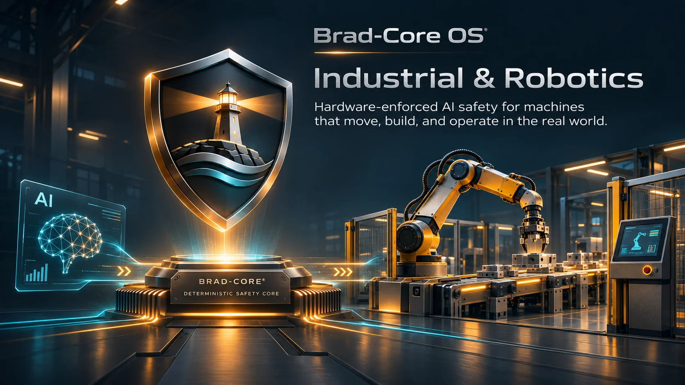

Physical envelopes
Machine-specific limits define safe operation.

A proposed independent safety check for robots and automated industrial equipment.
A proposed independent safety check for robots and automated industrial equipment.
A robot may receive a command to move too fast, too far, or into an unsafe area. Brad-Core aims to check the command against the machine's limits before it moves.
Proposed industry application; machine-specific verification not yet completed.
Machine-specific limits define safe operation.
A misbehaving planner should not become its own safety authority.
Dedicated safety case and target-machine testing would be required.
Each machine needs its own stopping-distance tests, load limits, failure scenarios, and measured response times. Those physical tests have not been completed.
We welcome conversations with plant operators, robotics engineers, and industrial controls teams.
CONNECT WITH BRAD-CORE